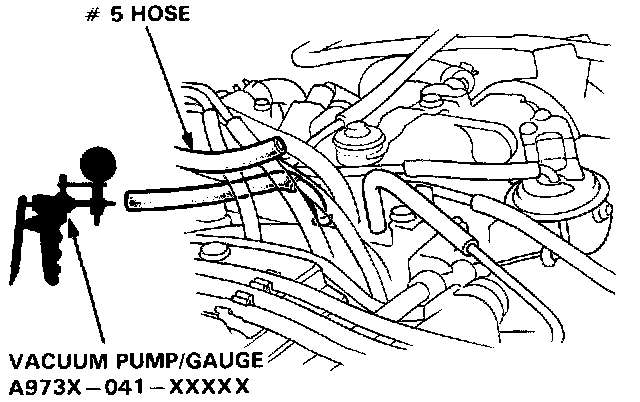
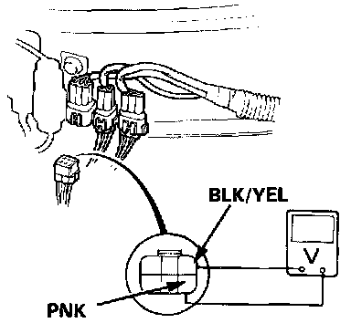
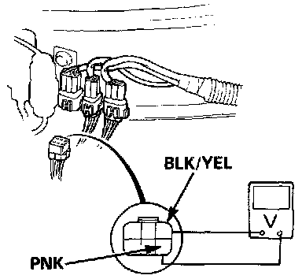

Coupe
Solenoid Valve TestsTest I:
1. Start the engine and warm up to normal operating temperature (cooling fan comes on).

2. Disconnect the # 5 vacuum hose from the intake manifold, and check the vacuum.
- If there is no vacuum, check the vacuum port.
- If there is vacuum, check the vacuum line for proper connection, cracks, blockage or disconnected hose. If the vacuum line is OK. reconnect the hose.
3. Disconnect the 6P connector.

4. Attach the positive probe of the voltmeter to BLK/YEL terminal and the negative probe to PNK terminal.
5. Within 10 seconds after restarting the engine, check the voltage at idle.
- If there is voltage, replace the solenoid valve and retest.
- If there is no voltage, attach the positive probe of the voltmeter to BLK/YEL terminal, and the negative probe to body ground. Within 20 seconds after restarting the engine, check the voltage.
- If there is no voltage, repair open circuit in BLK/YEL wire between the solenoid valve and No. 9 (10A) fuse.
- If there is voltage, inspect open in PNK wire between the solenoid valve and ECU. If wire is OK, substitute a known-good ECU and retest. If symptom goes away, replace the original ECU.
Test II:
1. Start the engine and warm up to normal operating temperature (cooling fan comes on).
2. Disconnect the 6P connector.

3. Attach the positive probe of the voltmeter to BLK/YEL terminal and the negative probe to PNK terminal.
4. Check the voltage at idle 15 seconds after starting the engine.
- If there is voltage, inspect short in PNK wire between the solenoid valve and ECU. If wire is OK, substitute a known-good ECU and retest. If symptom goes away, replace the original ECU.
- If there is no voltage, replace the solenoid valve and retest.